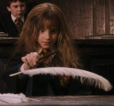
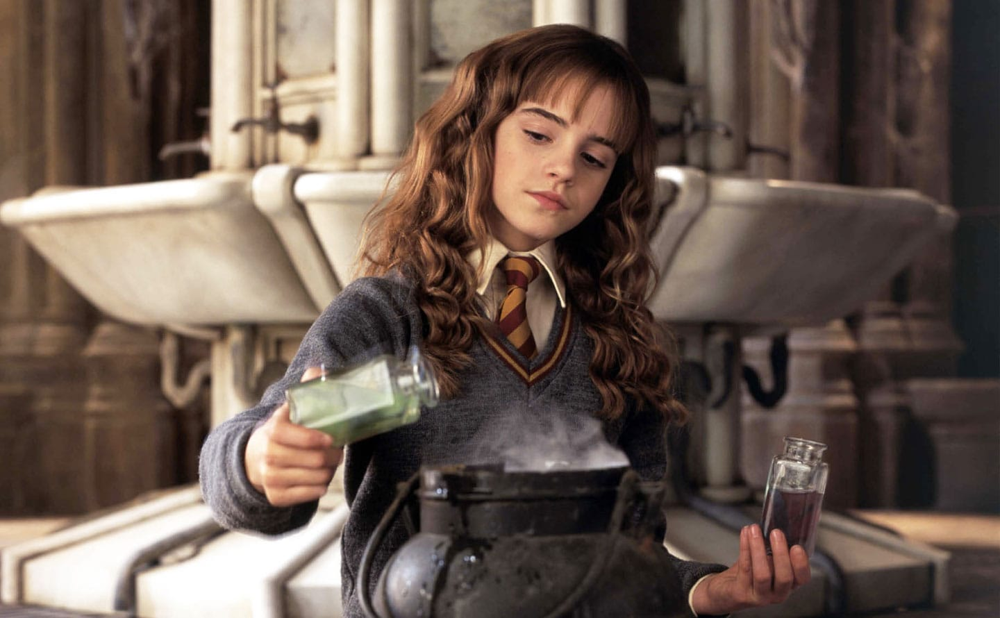
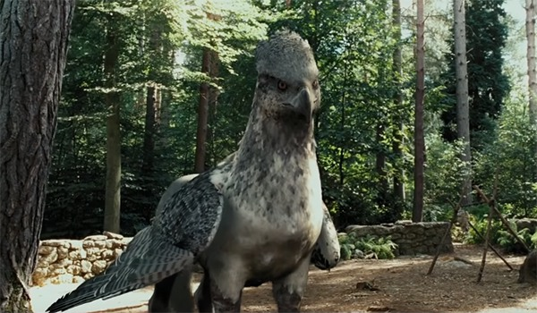
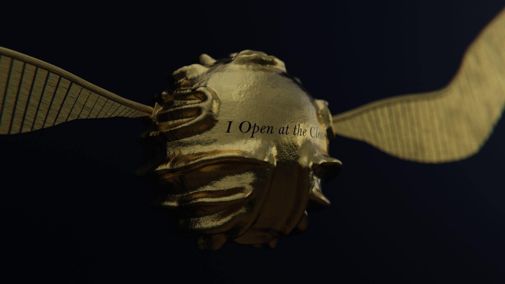

Charms
A Charm, also known as an Enchantment,was a spell that added certain properties to an object or individual. Charms were distinguished from transfiguration spells in that a charm added or changes properties of an object; it focused on altering what the object did as opposed to what the object was. For example, the Colour Change Charm caused something to flash different colours; the Levitation Charm caused an object to levitate, the Cheering Charm improved upon a individual's mood.

Potions
Potions was a core class and subject taught at Hogwarts School of Witchcraft and Wizardry and Ilvermorny School of Witchcraft and Wizardry.In this class, students learnt the correct way to brew potions.They followed specific recipes and used various magical ingredients to create potions, starting with simple ones and moving to more advanced ones as they progressed in knowledge.A standard potions kit included plant ingredients such as Belladonna,and supplies such as glass phials and weighing scales, along with a standard cauldron that all students were expected to bring with them to lessons.
Defence Agains The Dark Arts
A Charm, also known as an Enchantment,was a spell that added certain properties to an object or individual. Charms were distinguished from transfiguration spells in that a charm added or changes properties of an object; it focused on altering what the object did as opposed to what the object was. For example, the Colour Change Charm caused something to flash different colours; the Levitation Charm caused an object to levitate, the Cheering Charm improved upon a individual's mood.

Care Of Magical Creatures
Care of Magical Creatures,also known as Creature Care,was an elective course at Hogwarts School of Witchcraft and Wizardry that can be chosen by students in their third year.Ilvermorny School of Witchcraft and Wizardry introduced this course in 1927. In the class, students learnt about a wide range of magical creatures, from flobberworms,hippogriffs, unicorns and even thestrals. Students were taught about feeding, maintaining, breeding, and proper treatment of these creatures and many more.

Quidditch
Quidditch (formerly known as Kwidditch and Cuaditch) was a wizarding sport played on broomsticks.It was the most popular game and most well-known game among wizards and witches, and, according to Rubeus Hagrid, the equivalent to Muggles' passion for football (Soccer). The object of the game was to score more points than your opponents. Each goal was worth ten points and catching the Golden Snitch was worth one-hundred and fifty points. The game ended when the Snitch was caught or an agreement was reached between the captains of both teams. Some games could go on for many days if the Snitch was not caught (the record, according to Quidditch Through the Ages, was six months, although no one caught the Snitch.)